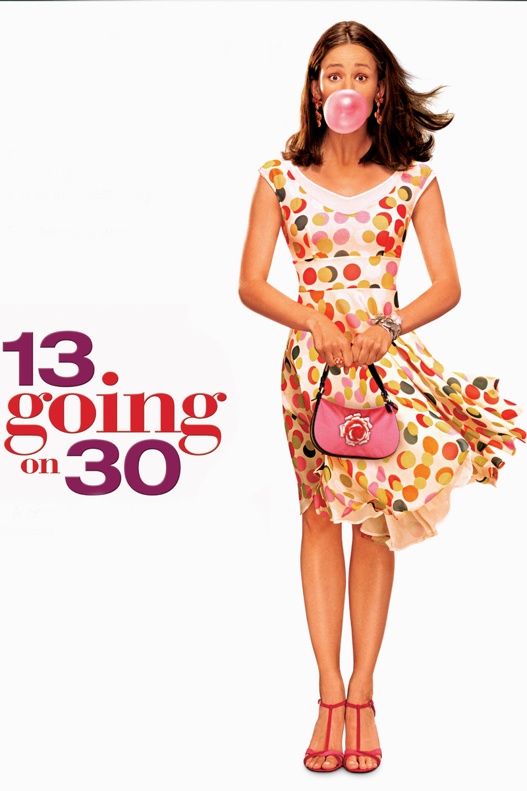

13 Going on 30

Rated: PG-13
Intro:
Do you remember when you were in middle school and all you wished for was to be a grown-up already? To mature faster and become the adult version of yourself you always aspired to be? Or as Jenna, the main character of this movie, would put it, "Thirty, flirty, and thriving."
Plot summary
In the movie 13 Going on 30, we follow Jenna Rink, a 13-year-old girl who desperately wants to grow up and skip the awkward middle school phase. On her 13th birthday, after an embarrassing game of "Seven Minutes in Heaven," Jenna finds herself in the bottom of her basement closet repeating her wish of being "thirty, flirty, and thriving." Little did she know she was going to wake up 17 years later as a successful 30-year-old woman. Jenna must be able to live this new life as a 30-year-old with the mindset of a teenager. While enjoying the perks of being an adult, Jenna must adjust to her new life, keeping up with her fast-paced job at Poise magazine while also realizing that growing up came with some unexpected consequences, including lost friendships, and missed milestones. Throughout the movie, she realizes that her vision of being an adult was nowhere near reality.
"Why Should I Watch It?":
I believe that if you love a little romance mixed with comedy this would be a great movie for you to watch. The movie is really sweet and highlights themes like the consequences of chasing popularity, to value those real and genuine friendships, staying true to yourself and to appreciate your life journey.
Actors/Directors:
-Jennifer Garner as Jenna Rink
-Mark Ruffalo as Matt Flamhaff
-Judy Greer as Lucy Wyman
Where to watch:
With Subscription- Hulu and Disney+
Watch for Free (with ads)- Tubi
Rent or Buy- Amazon Prime Video, Apple TV, Fandango at Home
Family Friendly?
Since the movie is rated as PG-13 they are a couple of scenes most parents wouldn't want their young children to watch. If a child is 13 or younger it is recommended that they watch it with parental guidance.
If you like this you should also watch...:
-Romcoms- 27 dresses (2008), How to Lose a Guy in 10 Days (2003)
-Body switching- Big (1988), Freaky Friday (2003), 17 Again (2009)
Filed under Romance